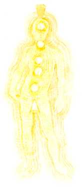

The Mental Body

The Physical Mental Body as it appears to clairvoyant
perception; showing
chakras.
[by Barbara Ann Brennan,
Hands of
Light]. Note the lines of energy flow and the chakras.
Energy-field body:
The Mental
BodyExpression of
Consciousness: Thinking
Statement Consciousness
makes: "I think"
Consciousness is expressed in terms of
rational thinking.
Expression of Health:
Clear thinking used to implement love and will
Expression of Disease:
Disturbance of form of mental body, dissociated
thought-forms
Plane of existence:
Physical Plane
Chakra: diaphragm and
solar plexus
colour:
Yellow
Barbara
Brennan on the Etheric Body:
The Mental Body (Third Layer)
"The third aura body is the mental body. This body
extends beyond the
emotional and is composed of still finer substances, all of which are
associated with thoughts and mental processes. This body usually appears as
a bright yellow light radiating about the head and shoulders and extending
around the whole body. It expands and becomes brighter when its owner is
concentrating on mental processes. It extends from three to eight inches
(7.5 to 20 cm) from the body
The mental body is also a structured body. It
contains the structure of our ideas. This body is mostly yellow. Within this
field can be seen thought forms. They appear to be blobs of varying
brightness and form. These thought forms have additional colors superimposed
on them, actually emanating from the
emotional level. The color represents the person's emotion that is
connected to the thought form. The clearer and more well-formed the idea,
the clearer and more well-formed is the thought form associated with that
idea. We enhance these thought forms by focusing on the thoughts they
represent. Habitual thoughts become very powerful well-formed forces that
then affect our lives.
This body has been the hardest for me to observe.
This may be partly caused by the fact that human beings are really just
beginning todevelop the mental body and are just beginning to use their
intellects in clear ways. For that reason we are very conscious of mental
activity and consider ourselves an analytical society.
from Barbara Brennan,
Hands of Light
pp.50-51
http://www.kheper.net/topics/subtlebody/BAB-mental.htm